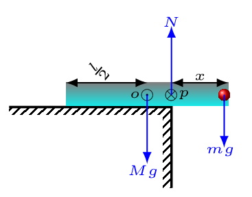

The beam can be balanced if it is placed on the edge of ledge by its new center of mass,
\(P\) (i.e., the center of mass of beam and man system). Here
\(o\) is the center of mass of a beam only.

Let \(x\) be the distance of beam overhung past the edge of ledge, then from free -body diagram, we have -
\begin{equation*}
\sum F_{y} = N-Mg-mg =0
\end{equation*}
\begin{equation*}
\therefore \quad N = (M+m)g
\end{equation*}
Since the beam is at static equilibrium. Now,
\begin{equation*}
\sum \Gamma = Mg\left(\frac{l}{2}-x\right) -mgx =0
\end{equation*}
This is a total torque about the new center of mass, \(P\) (or the point of rotation).
\begin{equation*}
\text{or,}\quad \frac{Ml}{2}-Mx =mx
\end{equation*}
\begin{equation*}
\therefore \quad x= \frac{Ml}{2(M+m)} = \frac{300\times 10}{2\times(300+60)} =4.17\,m
\end{equation*}
Alternative: we can solve this problem using center of mass formula,
\begin{equation*}
x_{cm} = \frac{m_{1}x_{1}+m_{2}x_{2}}{m_{1}+m_{2}} = \frac{300\times 5 + 60\times 10}{300+60} = 5.83\,m
\end{equation*}
\begin{equation*}
\therefore \quad x= l-x_{cm} =10-5.83 = 4.17\,m
\end{equation*}